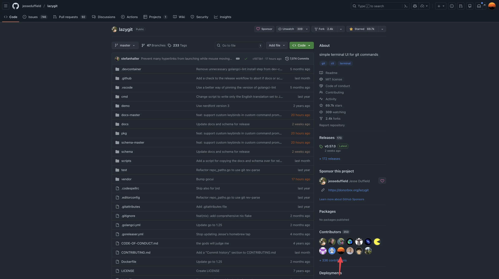

2025年を振り返る

目次
年の瀬なので1年を振り返る。
OSS#
PRでの貢献#
GitHubとGerritで54件のPR1を作成し48件のPRがマージされた。(GitHub2 Gerrit)
去年の数字が以下だったのでPR作成数、マージされたPR数ともに微増だった。
49件のPRを作成1し43件のPRがマージされた。
PR一覧は以下のような感じ。
機能追加#
- jesseduffield/lazygit - Add “CopyToClipboard” command to ConfirmationController
- jesseduffield/lazygit - Add new command “Checkout previous branch”
- nabekou29/pair-lens.nvim - feat: add Go expression_switch_statement and type_switch_statement support
ドキュメント関連#
- Homebrew/homebrew-cask - cursor: update homepage link
- rust-lang/this-week-in-rust - Add project update: “fzf-make v0.65.0”
- ratatui/.github - Fix typo Javascript -> JavaScript
- genkit-ai/docsite - Fix incorrect field name in express authentication example
- humanlayer/12-factor-agents - Fix typo
- humanlayer/12-factor-agents - Delete unnecessary ]
- go-task/task - chore: delete unnecessary whitespace
- go-task/task - docs: add fzf-make to “Community Integrations”
- jesseduffield/lazygit - Update the badges of golangci-lint and homebrew in README.md
- jesseduffield/lazygit - Update CONTRIBUTING.md to clarify translation contribution process
- nvim-orgmode/orgmode - docs: fix absences of line break
- bnjbvr/cargo-machete - doc: rename job name in example workflow
- rust-lang/cargo - docs: update version notice for deprecation removal
- geek-rabb1t/geek-rabb1t.github.io - typoを修正
- h3pei/trace-pr.nvim - docs: describe the default value of trace_by_commit_hash_when_pr_not_found explicitly in README.md
- golangci/golangci-lint - docs: explicitly describe that the migrate command automatically migrate linters.presets
- catppuccin/lazygit - doc: remove deprecated selectedRangeBgColor key from example
- yykamei/block-merge-based-on-time - Add ready_for_review as the workflow trigger to the example in README.md
- yuki-yano/zeno.zsh - docs(readme): replace exa with eza
- nand2tetris/web-ide - Fix typo in projects/src/project_08/21_nested_call.ts(initliazes -> initializes)
- cloudspannerecosystem/yo - Add installation method for Go 1.16+
- 703735: GoUsers: add Canary Inc.
- 703736: GoUsers: fix the position of CloudSign
バグ修正#
CI、開発環境等の修正#
- jesseduffield/lazygit - Add synchronize event to the hooks of “Check Required Labels”
- jesseduffield/lazygit - Use ignore directive to ignore test files not to be passes to gofumpt
- jesseduffield/lazygit - Update go to 1.25
- jesseduffield/lazygit - Run label check workflow only on label events and open pr event
- jesseduffield/lazygit - Enhance PR/Issue templates readability
- jesseduffield/lazygit - Pass only Git-tracked Go files to gofumpt
翻訳#
自作TUIのbrew release関連#
- Homebrew/homebrew-core - fzf-make 0.65.0
- Homebrew/homebrew-core - fzf-make 0.64.0
- Homebrew/homebrew-core - fzf-make 0.63.0
- Homebrew/homebrew-core - fzf-make 0.62.0
- Homebrew/homebrew-core - fzf-make 0.61.0
- Homebrew/homebrew-core - fzf-make: add task to available runner in description
- Homebrew/homebrew-core - fzf-make 0.60.0
- Homebrew/homebrew-core - fzf-make: update desc
- Homebrew/homebrew-core - fzf-make 0.59.0
- Homebrew/homebrew-core - fzf-make 0.58.0
- Homebrew/homebrew-core - fzf-make 0.57.0
- Homebrew/homebrew-core - fzf-make 0.56.0
- Homebrew/homebrew-core - fzf-make 0.55.0
- Homebrew/homebrew-core - fzf-make 0.54.0
寄付#
この記事を書いたときから継続してNeovimとratatuiに5$/monthずつ寄付し続けている。
https://blog.kyu08.com/posts/renew-oss-sponsoring/
https://blog.kyu08.com/posts/renew-oss-sponsoring/
だいたい累計$150くらい寄付したことになる。OSSコミュニティの持続可能性に少しでも貢献していきたいのでこれからも続けていく。
振り返り#
- PR数ベースで去年と同じくらいのペースでPRを送れた。（月平均4.5件ペース）3
- LazygitのGitHubのトップページのContributors一覧入りを果たした
- GitHubではcommit数が多い順にrepositoryにもよるが12人前後までのアイコンがContributorsに表示される。
- 細々とcontributionを続けたところのcommit数トップ9人に入れた。（2025/12/23現在）
- しばらくはこれを目標にlazygitへのcontributionを続けていたので素直に嬉しい。
- CIの修正やGoのバージョンアップなど、地味めなPRがメインだったがいくつか機能追加PRもマージしてもらえてよかった。 
- GoWikiへのcontributionに際してGerritを初めてつかった。
- GitHubとかなかなかメンタルモデルが違う感じだったので結構手間取った。
- 参考になったリソースなどをいつか記事にしたい。
OSSメンテナに感謝されるのは嬉しいし、OSSの持続可能性にも少しでも貢献していきたいので引き続きやっていきたい。
社内でもOSSは楽しいぞーという話を何回かしたところ、それをきっかけにしてOSS貢献にトライしてくれる方が何名かいたのも素直に嬉しかった。
個人開発#
- fzf-make
- スター数
- 追加した機能の紹介
仕事#
- 転職した
- MVPを受賞した
ブログ#
- OGPを動的生成するようにした
- Heading要素のデザインを変えた
- プレビュー環境を整えた
- 今年のPV数を振り返る？
読書など#
- 読んだ本を紹介
生活#
- ジムに行き始めた
- なんか早く寝れるようになってきた
- お昼ご飯たくさん食べると午後の仕事が捗ることに気づいた
2026年の豊富#
おわりに#
Read other posts